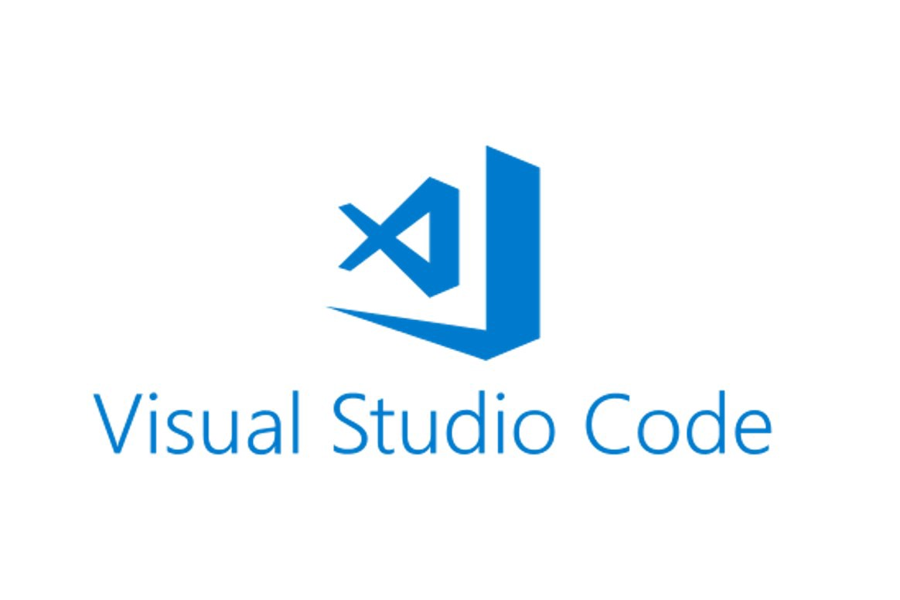

¿Cómo empezamos?
 Carlos Apraez
Carlos ApraezPara la realización de este proyecto, se ha tenido que tener en cuenta las diferentes posibilidades existentes y las herramientas necesarias para la realización del mismo. Desde el principio de este proyecto se tuvo en cuenta usar una herramienta que incluye ámbitos de programación de objetos y modelado para la hacer los objetos.

Librerías
Unity fue la primera opción para el equipo, pero, por problemas de licencia, y requisitos de equipos con una mayor capacidad de procesamiento, el equipo tuvo que descartar esta idea y empezar a investigar nuevas alternativas.
Tras investigar acerca de varios software que se adaptaran a nuestras necesidades, tales como licencias gratuitas, librerías explicativas, además de contar con programación en el lenguaje de JavaScript, puesto que es un lenguaje muy reconocido y usado por los diseñadores de este proyecto, se encontró la librería Three,js la cual es una biblioteca liviana escrita en JavaScript, para crear y mostrar gráficos animados por ordenador en 3D en un navegador Web y puede ser utilizada usando elementos en HTML5, SVG o WebGL. También, el código fuente está alojado en un repositorio en GitHub, con esto, la facilidad de encontrar posibles tutoriales y codigos de free use para este trabajo.
En https://threejs.org/ encontramos mucha inspiración para nuestro trabajo, en los cuales hay ejemplos, preguntas frecuentes, repositorios de códigos hechos por expertos y demás.
Aparte de esto, para hacer los árboles de cada usuario y cargar su entorno virtual cada que quiera el usuario, se debía tener una base de datos, con el correo de cada usuario que se registrase, y conectar a three.js con una base de datos que se fuera actualizando automáticamente, para esto, se utilizó Firebase, esta una plataforma para el desarrollo de aplicaciones web y aplicaciones móviles desarrollada por Google. De esta forma, cada que un usuario cree su usuario se agrega a esta base de datos, y con el resultado obtenido en el formulario, se guarda y al momento en que Three.js pida esta información, la base de datos se la proporcionará.

Para este punto, se tiene la librería y una base de datos estable, pero, se requiere un editor de código para hacer converger estos dos y cambiar lo que sea pertinente en el lenguaje de JavaScript. Para esto, nuestro editor de código utilizado es Visual Studio Code, con el cual podemos editar archivos de Css, Html, Java y Javascript, además de ser capaz de conectarse y dar órdenes a la base de datos.
